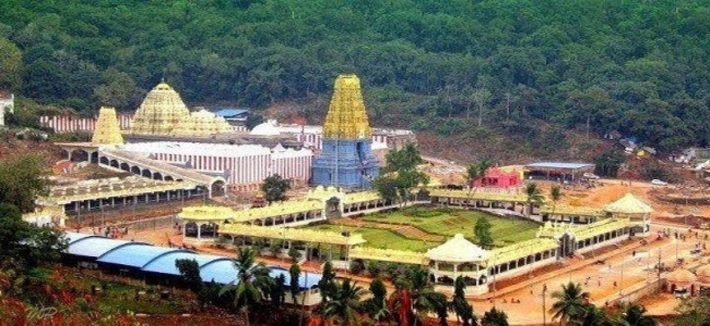

Family Places
Home Town
Tourist Spots
Family Places
Vizag Port
Vizag Foods
Best Places to Visit
List
Indira Gandhi Zoological Park
Simhachalam Temple
Yarada Beach
Indira Gandhi Zoological Park
Indira Gandhi Zoological Park is one of the largest zoos...
Simhachalam Temple

Simhachalam Temple is a renowned Hindu temple...
Yarada Beach
Kerala Houseboats, locally known as kettuvallams...